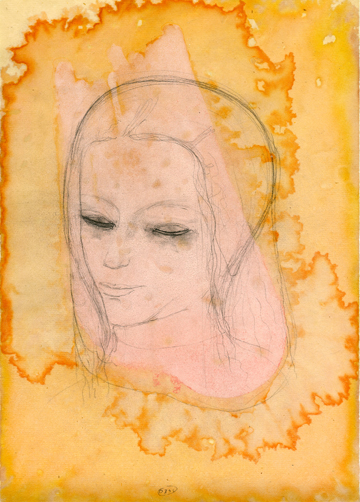
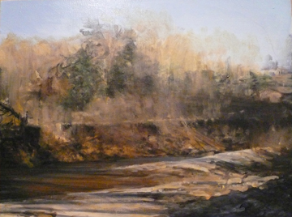
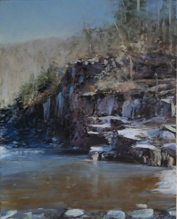
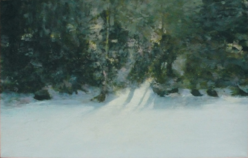
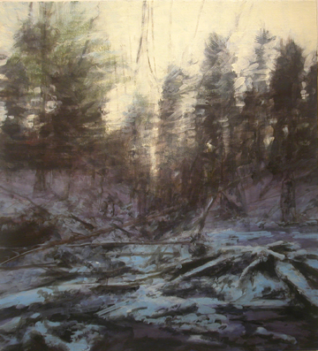

|
> Previous Exhibitions > 2008 > Dean Dass | New Paintings & Drawings
Dean Dass
New Paintings & Drawings
4 December 2007 - 25 January 2008
11-5, Tuesday - Saturday, and by appointment
Preview Reception with the Artist
Tuesday, 4 December, 5:30 - 7:30 pm
Music by
Cathy Bollinger and Marcie Slaughter
First Friday Opening
7 December, 5:30 - 7:30 pm

Dean Dass. Head in Orange Clouds, 2007.
Pencil, ink, gouache, various pigments, 14 x 10 inches.
To view more, see artists page >

Dean Dass. Mechums River, 2007.
Oil on linen, 16 x 20 inches.

Dean Dass. Cliffs on the Upper Moormans River, 2005.
Oil on linen, 16 x 20 inches.

Dean Dass. Post Pond, Lyme, New Hampshire, 1997.
Oil on linen, 34 x 54 inches.
This painting has been hanging in the American Embassy in Vienna and has recently been returned.

Dean Dass. Upper Moormans River, 2005.
Oil on linen, 18 x 24 inches.
|